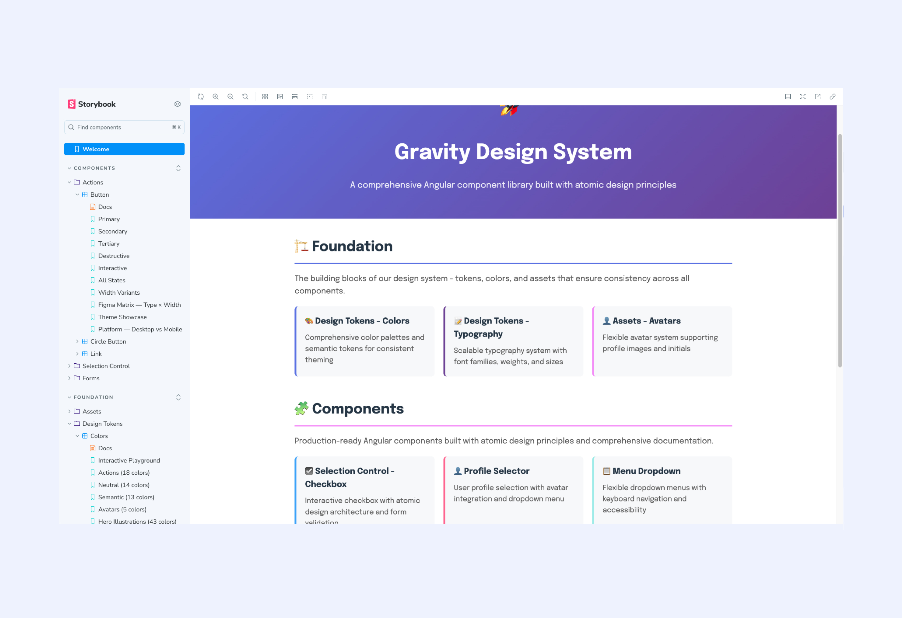

Gravity Design System · Doctor Anywhere
A Storybook, built solo
Figma was the design source of truth. Engineers needed working code — so I built it myself.
Design Systems · Developer ToolingProduct Designer & Builder · Built with Cursor AI · Live on Bitbucket
01 · The problem
A source of truth engineers couldn't copy from.
Gravity, our Figma design system, was thorough — but Figma only shows engineers what a component looks like, not how it's built. Every team re-interpreted the same component slightly differently, and the white label portal needed one consistent implementation, not several.
02 · The build
Working code, mapped 1:1 to Figma.
01 / 02
03 · What it changed
A free, functional bridge between design and code.
100%built from scratch, solo, with Cursor AI as co-pilot
$0hosting cost — deployed free on Bitbucket static hosting
Liveand in daily use by engineers implementing Gravity components
The bigger finding wasn't technical: with the right AI tooling, a designer can build the thing engineers actually needed — not another spec, but working code they could copy straight from.